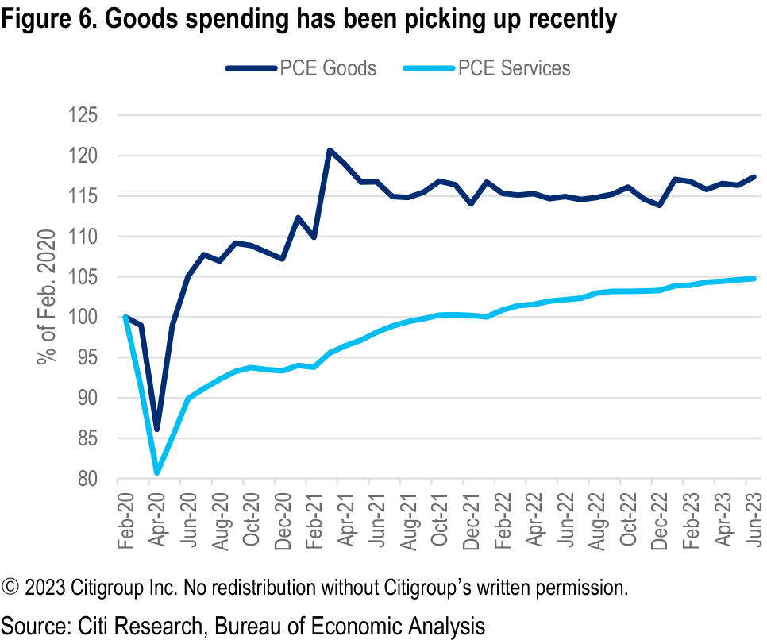

US Economics Weekly
Growth and inflation take higher yields in stride
CITI'S TAKE
The US economic expansion has proved more resilient than even our relatively constructive estimates had implied. Rather than meeting expectations for a slowdown, growth has accelerated and broadened away from the services sector. But stronger activity and tight labor markets mean upside risks to inflation are rising. Chair Powell’s comments at Jackson Hole also seemed more attuned to these upside growth and inflation risks. It increasingly appears that longer-term yields sustained at or above current levels will be required to return inflation to the 2% target.
====================================================================================================
The consensus view that the US economy would slow substantially over the course of 2023 has not materialized in the data. Even the “soft landing” that Fed officials have maintained as a (hopefully) modal scenario is inconsistent with surprisingly strong, above-potential growth going into the second half of the year.
Usually, consensus forecasts imagine stable growth and recessions come as a surprise. But given Fed officials’ mandate to slow inflation back to target from an over 50-year high, many forecasters (ourselves included) saw a downturn strong enough to be termed a “recession” as the most likely mechanism for damping inflationary pressure.
We still see a recession as the most likely way inflation returns to target – but the timeline on when that downturn will occur keeps pushing later. Last week’s strong advances in industrial production and retail sales continued the theme of resilient activity. We are now tracking Q3 GDP growth at 2.3%. While that’s good news for the near-term outlook for growth, it raises upside risk to inflation. It also implies a potentially more prolonged period of higher policy rates.
Treasury yields moved off their highs on Wednesday on two data points that renewed concerns about a slowdown, but we did not see either of these as substantially changing the macro outlook.
Most influential were globally weaker PMI readings. After manufacturing PMI unexpectedly increased to 49.0 in July it fell back to 47.0 in August. We see risk that this metric will move back above 50.0 in coming months. Durable orders are broadening away from still-strong aircraft and autos. Stronger growth in spending on goods should also support the sector. On the other hand, it may be that globally softer goods demand is putting a cap on the strength of the US domestic sector.
Figure 1. 2023 consensus growth forecast and SEP
Figure 2. 2023 year-end unemployment rate and SEP
====================================================================================================
see some slowing in this sector given the recent uptick in goods spending. Overall, diffusions indices showing a modestly expanding services sector and contracting manufacturing sector do not substantially change the domestic outlook.
There has been a narrative in the US that the labor market is “weaker than it looks” with establishment survey-based payrolls in particular overstating hiring. The highly anticipated 306k preliminary downward revision to the level of payrolls in March technically confirm that job growth was overstated – but only slightly. Instead of averaging 296k per month, the revision would imply 271k per month. Post-revision the labor market still looks historically tight, and job growth is running at rates that will at least keep it that way, if not tighten it further.
Figure 3. Manufacturing PMIs remain below 50 levels
Figure 4. Durables goods orders ex transportation and manufacturing
Figure 5. Services PMIs are still in expansionary territory
Figure 6. Goods spending has been picking up recently
====================================================================================================
July housing data confirmed what we would expect in an economy where 30-year mortgage rates have risen from around 3% to closer to 7%. The supply of existing homes on the market remains low, keeping sales running at lower levels. New home sales hit a one-year high as demand is channeled to the new homes market.
For a third consecutive month, the seasonally adjusted median existing home sales price increased at close to a 10% annualized rate. House prices are not directly included in the official inflation metrics, but imputed rents on owner occupied housing (OER) is. While direct rents and OER tend to move together, the BLS recently updated the sample of rents in OER to better account for the differing trends in multifamily and single family detached dwellings (as owned homes are much more heavily skewed to single family). The rapid rise in house prices suggests OER can stay more elevated or potentially accelerate again in 2024 after
Figure 7. Job growth has slowed but still remains above 100k
Figure 8. The labor market continues to be too-tight
Figure 10. Supply of existing homes is limited
Figure 9. Existing home sales have been declining as new home sales
====================================================================================================
Figure 11. Home prices have been increasing
Figure 12. We see upside risk for owners’ equivalent rent for next year
Figure 13. Delinquency rates have been rising back towards pre-pandemic levels
====================================================================================================
Figure 15. Loan growth has slowed compared to last year
Figure 14. The senior Loan officer survey showing credit conditions
====================================================================================================
Figure 16. Data Releases
====================================================================================================
Figure 17. General election polls are close
Figure 18. President Biden approval rating
Figure 19. Biden leading Democratic Polls
Figure 20. Trump and DeSantis gap widening
====================================================================================================
Figure 21. Information sector payrolls could decline substantially due to the actors strike
Figure 22. Wage growth has picked up somewhat recently, although
====================================================================================================
Figure 23. The unemployment rate remains at very low levels
Figure 24. Financial services prices will substantially boost PCE
====================================================================================================
Figure 25. Spending on both goods and services has been surprisingly resilient recently
Figure 26. Job openings could move relatively sideways in the coming
====================================================================================================
Figure 28. Aggregate inventories peaked in real terms in Q1 this year
Figure 27. Single family residential construction spending should rise
====================================================================================================
Figure 29. We expect ISM Manufacturing to remain below 50 levels in August
Figure 30. Initial claims have remained at relatively low levels but
====================================================================================================
Figure 32. FOMC ranked from hawkish to dovish
====================================================================================================
Figure 34. GDP growth tracking
Figure 35. GDP contributions
Figure 36. Atlanta Fed GDP Now and Citi Forecasts for Q3
====================================================================================================
Figure 37. Citi 12-month inflation forecasts versus market pricing
====================================================================================================
Figure 38. Citi CPI forecast versus market pricing
Figure 39. Market forward inflation pricing
Figure 40. Economic Indicators forecast

====================================================================================================